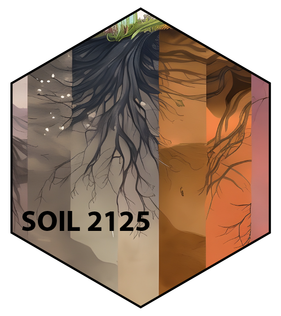

Basic Soil Science (SOIL 2125) Lab Manual - Spring 2023

Preface
“Tell me an I forget, teach me and I may remember, involve me and I learn.”
- Benjamin Franklin
Laboratory Schedule
Note that the laboratory portion of this course is self-paced. The lab has open hours and is self-paced so you can return as often as needed to complete the lab exercises (Laboratory TA’s will be in the lab during all open hours to help you). Make sure you sign in and out.
Labs take approximately 1-2 hrs to complete. You will sign up for a timeslot of your choice. Open times: W 9:00 AM - 8:30 PM Th 9:00 AM - 8:30 PM F 9:00 AM - 4:30 PM 241 Borlaug Hall
Lab Teaching Team
Teaching Support and Lab Coordinator
Nora Pearson
pear0747@umn.edu
Office Hours (Zoom):
M 9:35-10:25AM, and by appointment
Laboratory TAs
XXXXX
XXXXX
Logitstics and Laboratory Philosophy
###Whys is this lab self-paced and what does that even mean?
Something here about pedagogy
How will I fit the lab into my schedule?
details here
Anything else?
dunno